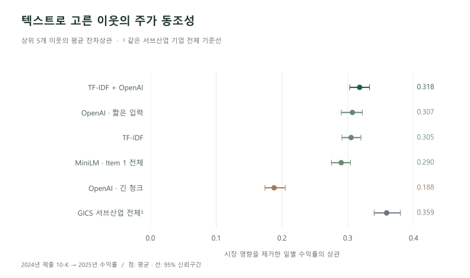
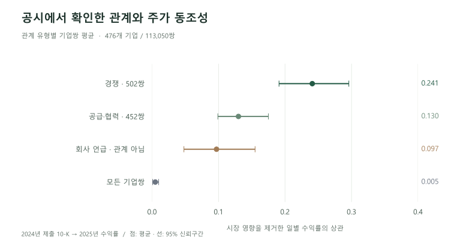

사업과 위험요인을 구분
사업 설명(Item 1)을 기본 입력으로 두고 위험요인(Item 1A)은 별도로 비교했습니다. 표·쪽번호·머리글을 정리하되 대소문자를 유지하고, 잘못 추출된 문서는 품질 판정으로 걸러냈습니다.
FINANCIAL NLP / SEC 10-K
사업이 비슷한 기업은 주가도 함께 움직일까?
기업의 사업 설명을 비교해 새로운 비교 기업을 찾고, 그 연결이 실제로 의미가 있는지 검증했습니다. 공시 수집부터 텍스트 모델 비교, 주가 동조성 분석, 근거 문장을 확인하는 기업 관계도까지 연결한 연구입니다.
01 / RESEARCH QUESTION
산업분류는 기업을 비교하는 좋은 출발점입니다. 하지만 고객·공급사나 서로 다른 업종의 경쟁 기업까지 모두 같은 분류로 묶이지는 않습니다. 10-K의 사업 설명에서 이런 연결을 찾을 수 있는지 살펴봤습니다.
분류를 얼마나 잘 재현하는지만 평가하면, 업종 밖의 유의미한 연결도 오답이 됩니다. 그래서 공시 이후의 주가 동조성과 산업분류 밖에서 찾은 이웃을 핵심 검증 대상으로 삼았습니다.
02 / RESEARCH DESIGN
EDGAR의 Item 1·1A
추출 오류·짧은 문서 판정
TF-IDF · SBERT · OpenAI
청크·평균 벡터 제거 비교
코사인 유사도
백분위 평균 앙상블
GICS·SIC 분류 재현
다음 해 수익률 동조성
사업 설명(Item 1)을 기본 입력으로 두고 위험요인(Item 1A)은 별도로 비교했습니다. 표·쪽번호·머리글을 정리하되 대소문자를 유지하고, 잘못 추출된 문서는 품질 판정으로 걸러냈습니다.
단어 빈도 기반 TF-IDF를 기준으로 MiniLM, mpnet, OpenAI를 평가했습니다. 임베딩의 평균 벡터를 뺀 뒤 유사도를 계산하고, 서로 척도가 다른 점수는 기업쌍 백분위로 바꿔 결합했습니다.
각 기업을 제외한 유니버스 동일가중 수익률로 시장 요인을 제거했습니다. GICS를 통제한 기업쌍 회귀와 기업 단위 부트스트랩으로 분류 이상의 정보와 추정 불확실성을 확인했습니다.
YAML 설정, 단계별 캐시, CLI로 수집·임베딩·평가를 분리했습니다. 중단한 작업을 이어 실행할 수 있고, 지표와 Markdown 리포트를 같은 실험 이름으로 저장합니다.
03 / EMPIRICAL RESULTS
상위 5개 이웃의 평균 잔차상관은 TF-IDF + OpenAI 앙상블에서 0.318이었습니다. TF-IDF 대비 차이는 +0.013, 짝지은 차이의 95% 신뢰구간은 +0.007~+0.019입니다.

앙상블로 자기 서브산업 밖에서만 고른 상위 5개 이웃은 같은 섹터·다른 서브산업 기업 평균보다 잔차상관이 0.102 높았습니다.
같은 OpenAI 모델에서도 최대 8천 토큰 청크와 앞 1,536토큰을 384토큰씩 나눈 입력의 결과는 크게 달랐습니다. 두 조건 모두 평균 벡터를 제거했습니다.
TF-IDF는 로컬 임베딩보다 나았고, 짧은 입력의 OpenAI와는 유의한 차이가 없었습니다. 복잡한 모델을 쓰는 것 자체가 성과를 보장하지 않았습니다.
| 방법 | 평균 | 95% 구간 |
|---|---|---|
| TF-IDF + OpenAI | 0.318 | 0.303–0.333 |
| OpenAI / 앞 1,536토큰 + center | 0.307 | 0.290–0.322 |
| TF-IDF | 0.305 | 0.291–0.320 |
| MiniLM / Item 1 전체 + center | 0.290 | 0.275–0.304 |
| OpenAI / 최대 8천 토큰 청크 + center | 0.188 | 0.174–0.205 |
| 같은 GICS 서브산업 전체 | 0.359 | 0.340–0.380 |
04 / RELATIONS & EVIDENCE
유사도는 관계 유형을 설명하지 않습니다. 공시의 회사 이름 언급과 주변 문맥을 판정하고, 관계별 근거 문장을 확인하는 React·FastAPI 웹앱을 구현했습니다. 현재 개발 중이며, 경쟁·공급·협력 판정은 확인 표본으로 검증했습니다.
텍스트가 비슷한 기업에 공시에 직접 등장한 기업을 더해 후보 누락을 줄입니다.
근거 문장과 앞뒤 문단으로 경쟁·공급·협력·지분을 판정합니다. 이름만 같은 경우를 구분합니다.
관계와 근거를 함께 보여주고 불확실한 판정은 검수 대기로 남깁니다. 검수 기록은 별도 DB에 보관합니다.

05 / INTERPRETATION
텍스트는 분류표 밖에서도 함께 움직이는 기업을 찾았습니다. 그러나 상위 5개 이웃 평균은 같은 GICS 서브산업 전체 기준선 0.359보다 낮았습니다. 산업분류를 대체한다는 결론보다, 기존 분류에 새로운 비교 대상을 더하는 접근이 적절합니다.
현재 기업 목록·GICS를 과거 공시에 적용해 생존 편향이 남습니다. 2025년 한 해의 상관관계는 초과수익이나 인과관계의 증거가 아니며, 서로 반대로 움직이는 경쟁 관계는 이 지표에서 과소평가될 수 있습니다.
이 연구에서 중요했던 것은 가장 큰 모델을 고르는 일이 아니라, 기업 비교에 필요한 정보를 정의하고 그 정보가 실제로 유효한지 확인하는 일이었습니다.